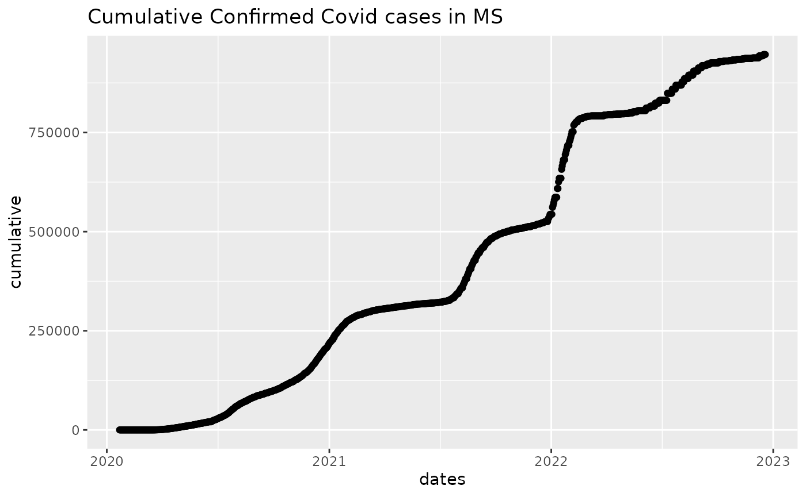
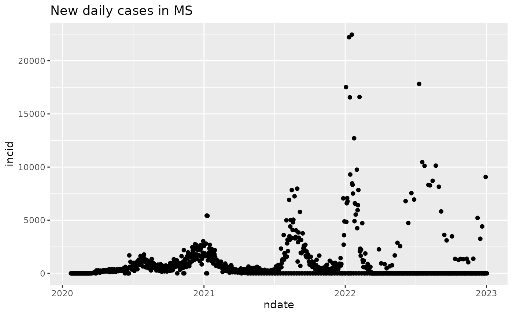

vignettes/B1Inftiming.Rmd
B1Inftiming.RmdIn this section we will work with time series of reports of new cases of COVID-19 infection.
Another time series resource of interest records date, place and assigned cause of COVID-19 related deaths. At this time we will not be analyzing this data.
The usafacts_confirmed function produces a table with rows corresponding to US counties and columns corresponding to dates. Entries of the table are counts of new COVID-19 cases.
Here’s a quick look at the table:
library(teachCovidData)
cc = usafacts_confirmed() # confirmed cases by county
library(dplyr)
MSdata = cc |> filter(State=="MS")
head(MSdata[,1:10])## countyFIPS County Name State StateFIPS 2020-01-22 2020-01-23
## 1 0 Statewide Unallocated MS 28 0 0
## 2 28001 Adams County MS 28 0 0
## 3 28003 Alcorn County MS 28 0 0
## 4 28005 Amite County MS 28 0 0
## 5 28007 Attala County MS 28 0 0
## 6 28009 Benton County MS 28 0 0
## 2020-01-24 2020-01-25 2020-01-26 2020-01-27
## 1 0 0 0 0
## 2 0 0 0 0
## 3 0 0 0 0
## 4 0 0 0 0
## 5 0 0 0 0
## 6 0 0 0 0## [1] "2022-12-28" "2022-12-29" "2022-12-30" "2022-12-31" "2023-01-01"
## [6] "2023-01-02"We have to massage the column names to simplify programming with reocrd dates.
dates = lubridate::as_date(names(MSdata[-c(1:4)]))
cumulative = apply(MSdata[,-c(1:4)],2,sum)
head(cumulative)## 2020-01-22 2020-01-23 2020-01-24 2020-01-25 2020-01-26 2020-01-27
## 0 0 0 0 0 0We can now visualize cumulative case counts:
library(ggplot2)
mydf1 = data.frame(cumulative, dates)
ggplot(mydf1, aes(x=dates, y=cumulative)) + geom_point() + ggtitle("Cumulative Confirmed Covid cases in MS")
“Incidence” refers to the rate at which new cases arise, frequently reported as number of cases (in a given period of time) per 100000 individuals at risk at the start of the interval.
We use differences in cumulative counts to visualize time and size of outbreaks.
incid = diff(cumulative)
ndate = dates[-1]
mydf2 = data.frame(incid, ndate)
ggplot(mydf2, aes(x=ndate, y=incid)) + geom_point() + ggtitle("New daily cases in MS")